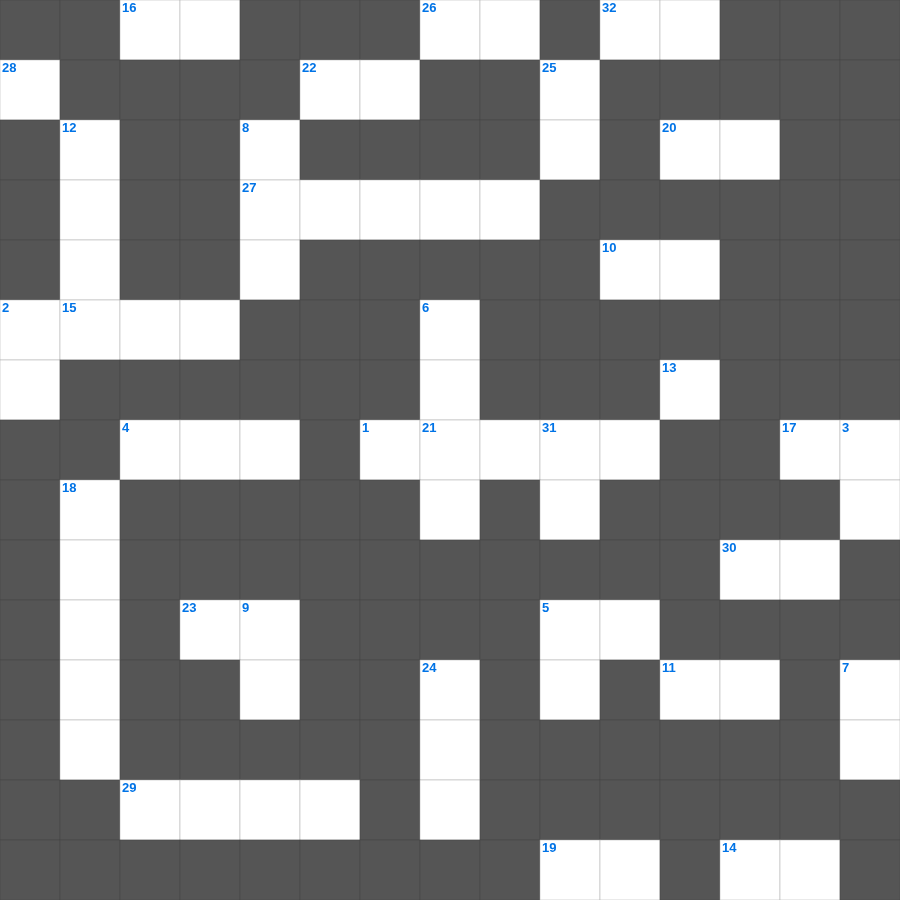

에스라 마스터 100 (2/2)
📌 서비스 정의
십자가로세로는 교회 주보와 주일학교에서 사용할 수 있는 성경 기반 가로세로 퍼즐 서비스입니다. 성경 인물, 사건, 핵심 구절을 바탕으로 제작되었습니다. 온라인 풀이 및 인쇄 기능을 제공합니다.
📖 에스라란?
에스라는 바벨론 포로에서 돌아온 이스라엘 백성이 성전을 재건하고, 학사 에스라가 율법을 가르치며 신앙 공동체를 회복하는 과정을 기록합니다.
📚 에스라의 주요 사건·주제
1차 포로 귀환 · 성전 재건의 시작과 중단 · 성전 재건 완성 · 에스라의 귀환과 율법 교육 · 이방 결혼 문제 개혁
에스라를 주제로 한 에스라 주일학교 퀴즈입니다. 35개의 단어를 맞춰보세요! 가로세로 낱말 퍼즐 형식으로 에스라의 핵심 내용을 재미있게 복습할 수 있습니다.

📝 가로 힌트
1. 무익하나마 내가 부득불 자랑하노니 주의 환상과 이것을 말하리라
2. 내 법을 그들의 생각에 두고 그들의 이것에 이것을 기록하리라
2. 내 누이 내 신부야 네가 내 이것을 빼앗았구나
4. 에스겔이 환상 중에 성전 문지방에서 흐르는 물의 깊이를 잰 도구
5. 그가 거룩하게 된 자들을 한 번의 제사로 영원히 이것하게 하셨느니라
10. 마지막 나팔에 순식간에 홀연히 다 이것하리니
11. 하나님이 이 모든 일로 말미암아 너를 이것 하실 줄 알라
13. 그들의 입에는 하나님에 대한 찬양이 있고 그들의 손에는 두 날 가진 이것이 있도다
14. 에스겔이 아내의 죽음에도 슬퍼하지 못한 이유
15. 너는 가서 기쁨으로 네 이것을 먹고 즐거운 마음으로 네 포도주를 마실지어다
16. 지혜로운 자의 집에는 귀한 보배와 이것이 있으나 미련한 자는 이것을 다 삼켜 버리느니라
17. 예후는 무엇을 모는 것이 미친 듯이 빠르기로 유명했나
19. 유다서 1장 24절: 우리를 능히 보호하사 무엇이 없게 하실 이
20. 무릇 마음이 가난하고 심령에 이것하며 내 말을 듣고 떠는 자 그 사람은 내가 돌보려니와
21. 남유다의 마지막 왕
22. 요한일서 5장 13절: 내가 이것을 쓴 것은 너희에게 무엇이 있음을 알게 하려 함인가
23. 그는 멸시를 받아 사람들에게 버림받았으며 이것을 많이 겪었으며 질고를 아는 자라
26. 내가 또 그들과 화평의 이것을 맺고 악한 짐승을 그 땅에서 그치게 하리니
27. 내가 이를 때까지 읽는 것과 권하는 것과 이것에 전념하라
28. 누구든지 하늘에 계신 내 하나님의 이것대로 행하는 자가 내 형제요 자매요 어머니이니라
📝 세로 힌트
2. 이것이 약한 자들을 격려하고 힘이 없는 자들을 붙들어 주며
3. 여호와는 의로우시도다 그러나 내가 그의 명령을 이것 하였도다
5. 너희 중에 지혜와 총명이 있는 자가 누구냐 그는 선행으로 말미암아 지혜의 이것함으로 그 행함을 보일지니라
6. 두기고와 함께 가는 신실하고 사랑을 받는 형제이자, 골로새 출신인 이 사람
7. 의인의 공의도 자기에게로 돌아가고 이것의 악도 자기에게로 돌아가리라
8. 종들아... 사람을 기쁘게 하는 자와 같이 이것만 하지 말고 오직 주를 두려워하여 성실한 마음으로 하라
9. 생각하건대 현재의 이것은 장차 우리에게 나타날 영광과 비교할 수 없도다
12. 너희는 하나님이 택하사 거룩하고 사랑 받는 자처럼 긍휼과 자비와 겸손과 온유와 이것을 옷 입고
18. 요시야가 죽은 후 왕이 되었으나 애굽으로 잡혀간 왕
24. 욥이 하나님을 찾으나 만날 수 없을 때 한 말 '내가 왼쪽으로 가나 이것 못하고'
25. 입은 심히 달콤하니 그 전체가 사랑스럽구나 예루살렘 딸들아 이는 내 사랑하는 자요 나의 이것이로다
31. 내 심령에 이르기를 여호와는 나의 이것이시니 그러므로 내가 그를 바라리라 하도다
🧩 이 퍼즐에서 배우는 내용
이 퍼즐은 에스라 마스터 100 (2/2)의 핵심 단어와 개념을 자연스럽게 복습할 수 있도록 구성되었습니다. 주일학교 수업이나 개인 성경공부에서 학습 내용을 점검하는 용도로 바로 활용할 수 있습니다.
🧑🏫 교회 교육 자료 활용
이 퍼즐은 주일학교 교재 추천 자료로 활용할 수 있고, 주일학교 주보에 넣기 좋은 분량으로 구성되어 있습니다. 수업용 주일학교 교안에 활동지로 붙이거나, 예배 후 복습용 주일학교 공과교재로 바로 사용할 수 있습니다.
🏷️ 키워드
에스라 주일학교 퀴즈, 에스라, 십자가로세로, 성경퀴즈, 말씀퀴즈, 가로세로퍼즐, 주일학교 교재 추천, 주일학교 주보, 주일학교 교안, 주일학교 공과교재